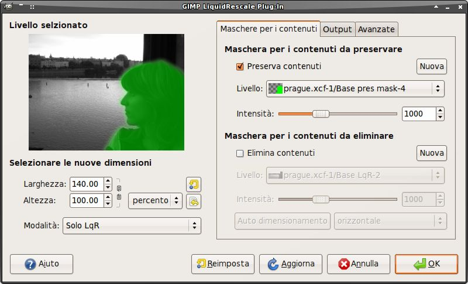
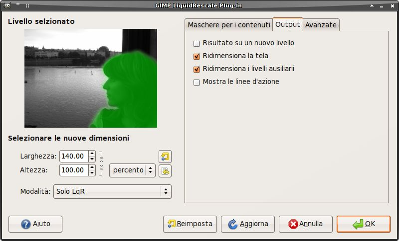
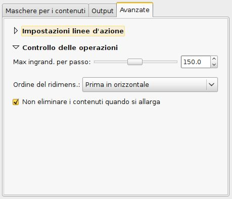
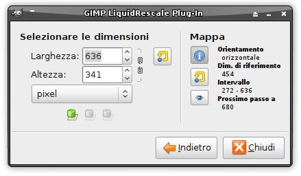

Il plugin Liquid Rescale è un'implementazione dell'algoritmo "content-aware resizing by seam carving" ideato da Shai Avidan e Ariel Shamir.
Il suo scopo è di ridimensionare non uniformemente le immagini pur mantenendo le caratteristiche più salienti dell'immagine, evitando possibilmente di distorcerle. Può anche essere utilizzato per rimuovere porzioni di immagine in modo "naturale".
Funziona sia rimpicciolentdo che ingrandendo, ed è possibile specificare manualmente quali zone dell'immagine devono essere preservate e quali ignorate (o rimosse).
Si veda anche Appendice: La tecnica del seam carving alla fine di questa pagina per un'introduzione ai concetti su cui si basa questa tecnica.
Il plugin agisce sul livello (o sulla selezione fluttuante) correntemente attivo. Può anche essere applicato a più livelli di un immagine attraverso il plugin "Filtra tutti i livelli" o usando il GIMP Animation Package per l'editing video.
Il plugin opera sempre su interi livelli; se una selezione è presente, è salvata come canale e rimossa. Se il livello ha una maschera per la trasparenza, viene mostrata un'opzione per stabilire se applicarla o rimuoverla prima di procedere.
Il plugin può anche essere usato in modalità batch dalla linea di comando, si veda questa sezione per maggiori dettagli.
Descrizione dell'interfaccia utente (modalità non-interattiva)

Selezionare le nuove dimensioni
Nota che le dimensioni finali possono essere impostate automaticamente quando si rimuovono contenuti, vedi più sotto.
Maschere per i contenuti
Guida rapida
Il sistema più semplice per selezionare manualmente le zone dell'immagine che si vogliono proteggere/ignorare è il seguente:
- Selezionate il livello (non la selezione fluttuante) che volete riscalare e invocate il plugin
- Cliccate il pulsante "Nuovo" nella sezione "Maschera per i contenuti da preservare" (questo creerà un nuovo livello trasparente, con opacità 50%, e imposterà un colore appropriato)
- Spostate da un lato la finestra del plugin e dipingete con il pennello (o altro) le aree che volete preservare
- Tornate alla finestra del plugin e cliccate sul pulsante "Aggiorna" per vedere le modifiche
- Ripetete il tutto per i contenuti da eliminare
Volendo eliminare porzioni di immagine, un metodo rapido per impostare le dimensioni finali è, dopo aver impostato una maschera per l'eliminazione, di cliccare su uno dei pulsanti a fianco dell'etichetta "Auto dimensionamento". (Questo metodo tuttavia funziona solo con maschere molto semplici).
Nota #1: l'eliminazione di parti dell'immaagine è possibile solamente quando la si restringe. Per default, la maschera per la preservazione dei contenuti viene ignorata quando si allarga l'immagine, perché in quel caso le aree contrassegnate verrebbero gonfiate anziché rimosse. Se volete davvero ottenere questo effetto, dovete disattivare l'opzione corrispondente nella linguetta "Avanzate".
Nota #2: la preservazione dei contenuti non è possibile se si cerca di ingrandire troppo l'immagine, poiché il processo di allargamento è l'inverso del processo di restringimento, quindi la massima quantità di pixel che è possibile aggiungere a un layer corrisponde al numero di pixel che non sono protetti. Per esempio, se avete un'immagine larga 1000 pixel e averte contrassegnato una porzione da preservare larga 800 pixel, la larghezza finale dovrebbe essere inferiore ai 1200 pixel. Per ingrandire di più, procedete in passi successivi, oppure impostate adeguatamente il valore del "Max ingrandimento per passo".
Descrizione completa
Output

Questa linguetta contiene alcune opzioni riguardo all'output del plugin.
- Scrivi su un nuovo livello
- Specifica se il risultato del ridimensionamento deve essere scritto su un nuovo livello. Per default è disattivata.
- Ridimensiona la tela
- Specifica se la tela deve essere ridimensionata in modo da adattarsi alle nuove dimensioni del livello attivo. Se quest'opzione è attivata (è il default), il livello attivo verrà anche riposizionato in modo da essere completamente visibile.
- Ridimensiona i livelli ausiliarî
- Specifica se i livelli che sono stati impostati per la selezione manuale dei contenuti e per specificare una maschera per la rigidità verranno ridimensionati assieme al livello attivo. Se quest'opzione è attivata (è il default), le parti dei livelli in questione che escono dal livello attivo verranno tagliate, dopodichè i livelli ausiliarî subiranno lo stesso processo di eliminazione/inserimento di linee del layer attivo.
- Mostra le linee d'azione
- Specifica se creare un nuovo livello che mostra la mappa delle linee d'azione (che sono le parti dell'immagine che vengono eliminate, se si restringe, o moltiplicate, se si allarga). I due pulsanti sulla destra permettono di stabilire le gamma dei colori da usare per le linee. Le linee sono calcolate sull'immagine originale in base alla necessità (per es. ne saranno calcolate 100 se si sta restringendo o allargando il livello di 100 pixel); le aree rimanenti restano trasparenti. Per interpretare il risultato, usate questa opzione assieme a "Scrivi su un nuovo livello", e sovrapponete il livello con le linee d'azione a quello originale. Se riscalate in due direzioni contemporaneamente, otterete due mappe, ma la seconda sarà calcolata su un'immagine intermedia invisibile, quindi non è molto utile. Lo stesso vale se si esegue un doppio ridimensionamento liquido (attivendo l'opzione "Riporta alle dimensioni originalo" in modalità "liquid rescale"), o se il ridimensionamento avviene in più passi perché si è superato il valore del "Max ingrandimento per passo". Nota che questa opzione è ignorata in modalità interattiva, ma i colori selezionati vengono usati quando si visualizza la mappa manualmente con l'apposito pulsante.
- Riporta alle dimensioni originali
- Specifica se riscalare all'indietro dopo la trasformazione con liquid rescale. Questo può essere utile ad esempio per la rimozione di oggetti o per fare uno "zoom dei contenuti". Se questa opzione è attivata, un menu compare al di sotto per scegliere la modalità delle operazioni: è possibile scegliere di ritornare alle dimensioni originali usando LqR o il ridimensionamento standard, oppure di ridimensionare uniformemente l'immagine fino a raggiungere o la larghezza o l'altezza originali, mantenendo però le proporzioni.
Avanzate
Questa linguetta contiene alcune opzioni che permettono un controllo avanzato dell'algoritmo di ridimensionamento.
Impostazioni linee d'azione

- Massimo passo trasverso
-
Questa opzione permette di impostare il massimo passo trasvero ammesso tra due pixel successivi delle linee d'azione. L'algoritmo standard usa un passo = 1, che significa che ogni pixel di una linea può essere spostato al massimo di un pixel rispetto ai suoi vicini. Questo comporta che le linee d'azione possono formare un angolo massimo di 45 gradi rispetto alla loro base.Aumentare il valore del passo massimo è l'unico modo di superare questo limite, tuttavia può portare all'introduzione di errori visibili. Per bilanciare questo effetto è consigliabile agire sul parametro di rigidità.
- Rigidità globale
-
Usando questo valore si assegna una penalizzazione alle linee d'azione meno diritte. Può risultare utile per ridurre le distorsioni in certi casi, o per evitare di introdurre gli errori derivanti da un valore troppo alto del passo (è consigliabile usare valori bassi in questo caso). Questo valore viene utilizzato su tutta l'immagine se non è specificata una maschera per la rigidità.[Dettagli tecnici: la penalizzazione è proporzionale alla somma delle differenze di coordinate trasversali (passo) per ogni coppia di punti successivi della linea, elevate alla potenza di 1,5.]
- Usa una maschera per la rigidità
-
È possibile specificare diversi valori di rigidità per le diverse aree dell'immagine, usando un livello ausiliario, e seguendo la stessa procedura usata per specificar le maschere per i contenuti (il colore di default in questo caso è il blu). Quando si imposta una maschera per la rigidità, il valore in ogni pixel (calcolato allo stesso modo che per le maschere per i contenuti) viene utilizzato come coefficiente di rigidità e moltiplicato al valore globale.Nota #1: le aree trasparenti (o nere) di una maschera per la rigidità corrispondono sempre a un valore di rigidità 0, indipendentemente dal valore globale.Nota #2: le aree più rigide hanno un leggero effetto repulsivo rispetto alle linee d'azione, simile a quello di una maschera per la preservazione. Questo effetto può essere compensato tramite una maschera per l'eliminazione.
- Funzione gradiente
- È possibile scegliere quale funzione deve essere utilizzata per calcolare la mappa dell'energia dell'immagine. Per ogni pixel nell'immagine, le componenti orizzontale e verticale del gradiente vengono calcolate a partire dai suoi quattro primi vicini. La mappa dell'energia dipende dal gradiente, e a sua volta determina quali elementi dell'immagine sono rilevanti, e dovrebbero essere preservati, e quali sono irrileventi e possono essere scartati. Usando la funzione Zero, unitamente alla preservazione manuale dei contenuti, è possibile soppiantare completamento il riconoscimento automatico dei contenuti; l'utente può così generare la propria mappa dell' energia (per es. con un altro plugin).
Controllo delle operazioni

- Max ingrandimento per passo
- Questa opzione imposta il massimo ingrandimento (in percentuale) che può essere effettuato in una sola volta. Se le dimensioni finali superano questa soglia, il plug-in si arresterà e ripartirà automaticamente tutte le volte necessarie. È possibile che dobbiate ridurre questo valore se avete delle maschere per la preservazione dei contenuti molto grandi.
- Ordine del ridimensionamento
- Quando si riscalano entrambe le direzioni in una sola volta, è possibile scegliere se procedere prima in orizzontale e poi in verticale, o viceversa.
- Non eliminare i contenuti quando si allarga
- L'effetto di una maschera per l'eliminazione dei contenuti è invertito quanto il plugin viene utilizzato per allargare un'immagine; dal momento che ciò non è normalmente l'effetto voluto, la maschera è ignorata per default quando si allarga lungo la prima direzione di ridimensionamento (in tali casi, una piccola icona di avvertimento compare nella sezione "Maschera per i contenuti da eliminare"). Disattivate questa opzione per disabilitare questa verifica. Nota che questa opzione viene ignorata in modalità interattiva.
Utilizzo del plugin per l'editing di video e animazioni
Utilizzo del plugin con GAP
Il plugin può essere utilizzato assieme al GIMP Animation Package (GAP) per l'editing video, così da applicare il riscalamento liquido a tutti i frames di un video (consultate la documentazione di GAP per informazioni riguardo all'editing video con GIMP).
Tuttavia, gli strumenti di GAP permettono di selezionare in maniera diretta soltanto il livello su cui lavorare, mentre il liquid rescale plugin necessita di utilizzare dei livelli ausiliarî per sfruttare tutto il suo potenziale. Per aggirare il problema, i livelli ausiliarî vengono selezionati in base al loro nome: perciò, se volete usare una maschera per la preservazione dei contenuti in ogni frame, per esempio, dovrete chiamare allo stesso modo tutti i livelli che intendete usare come tali. Lo stesso vale per le maschere per la preservazione dei contenuti e le maschere per la rigidezza.
Applicare il plugin su tutti i livelli (ad es. per le animazioni)
È anche possibile applicare il plugin a tutti i livelli di una data immagine (per esempio quando si lavora su un'animazione), usando l'opzione "Filtra tutti i livelli..." dal menu "Filtri" e scegliendo "plug-in-lqr" nella finestra di dialogo che compare. Le regole usate sono le stesse descritte nella sezione per l'utilizzo di GAP; tuttavia, incontrerete dei problemi in questo caso se usate dei livelli ausiliarî come maschere, poiché il plugin viene applicato anche a questi.
Descrizione dell'interfaccia utente (modalità interattiva)

La modalità interattiva viene attivata premendo il pulsante corrispondente nella finestra di dialogo principale: le impostazioni correnti (incluse quelle sulle dimensioni) vengono applicate, e viene mostrata una nuova finestra di dialogo ridotta. In questa modalità è possibile modificare solamente le dimensioni (e le modifiche vengono immediatamente applicate); inoltre alcune opzioni vengono ignorate:
- Mostra le linee d'azione (bisogna farlo manualmente, vedi sotto)
- Riporta alle dimensioni originali
- Non eliminare i contenuti quando si allarga
Selezionare le dimensioni
Questa sezione contiene i controlli per le dimensioni del livello. L'applicazione delle modifiche è quasi, immediata, ma solo dopo che i pulsanti sono stati rilasciati: questo significa che, se avete attivato il pulsante a catena per preservare le proporzioni del livello, il risultato sarà diverso a seconda che il ridimansionamento avvenga in diversi piccoli passi o tutto in una volta. Il pulsante di reset sulla destra riporta le dimensioni al valore iniziale: se la mappa non è mai stata reimpostata, il risultato è uguale all'immagine di partenza, altrimenti sarà diversa (vedi anche la sezione sulla mappa qui sotto).
Map
La sezione addizionale "Mappa" nella finestra di dialogo interattiva riguarda la mappa delle linee d'azione che il plugin usa internamente. Le mappe hanno un'orientamento (che dipende dalla dimensione del ridimensionamento), un valore di riferimento (quello di inizializzazione della mappa) e un intervallo d'azione. Le mappe permettono di ridimensionare quasi in tempo reale lungo la loro direzione e all'interno del loro intervallo d'azione; quando si oltrepassano i limiti dell'intervallo le mappe vengono aggiornate. Le mappe contengono tutta l'informazione relativa al proprio intervallo d'azione: dunque, se si ritorna al valore di riferimento di una mappa, si riottiene l'immagine originale. Tuttavia, ogni volta che la direzione di ridimensionamento cambia, o quando si supera il massimo ingrandimento per passo, la mappa viene automaticamente reinizializzata; quando ciò accade, tutte le informazioni precedenti sono perdute. Ci sono tre pulsanti in questa sezione:
- Pulsante info
- Mostra o nasconde le informazioni sulla mappa interna
- Pulsante reset
- Reimposta la mappa manualmente. Questo è equivalente a far ripartire il plugin dalla situazione attuale. Per esempio, se premete questo pulsante dopo aver modificato le dimensioni, e poi premete il pulsante reset nella sezione per le dimensioni, otterrete un risultato equivalente a quello che otterreste usando l'opzione "Riporta alle dimensioni originali" (impostata su "liquid rescale") in modalità non-interattiva.
- Pulsante visualizza
- Mostra la mappa attualmente in uso. Funziona allo stesso modo dell'opzione "Mostra le linee d'azione" della modalità interattiva, solo che si fa manualmente e quindi mostra una sola mappa alla volta. In ogni sessione, la prima volta che si preme questo pulsante viene creato un nuovo livello sul quale la mappa viene visualizzata, mentre le volte successive la nuova mappa viene sostituita alla vecchia. Per leggere il risultato bisogna riportare il livello su cui si sta lavorando alle dimensioni di referimento, e sovrapporvi la mappa. Questo pulsante è utilizzabile solo con immagini di tipo RGB.
Utilizzo del plugin in modalità batch
Il plugin viene distribuito assieme a degli script che aiutano ad utilizzarlo dalla linea di comando. Per averne una descrizione, utilizzate il "Navigatore di procedure" dal menu "Aiuto" di GIMP, e cercate batch-gimp-lqr, batch-gimp-lqr-full e batch-gimp-lqr-full-use-id; il significato delle opzioni dovrebbe risultare ovvio, sapendo come funziona l'interfaccia standard.
Appendice: La tecnica del seam carving
Il funzionamento del plugin si basa sulla ricerca dei cosiddetti "seams", o "linee d'azione" di un'immagine, ovvero delle linee continue che attraversano a zig-zag tutta l'immagine ta sopra a sotto (nel caso di linee d'azione "verticali"), o da sinistra a destra (per le linee d'azione orizzontali). Se una di queste linee d'azione, una di quelle verticali poniamo, viene rimossa dall'immagine (l'operazione che prende il nome di "carving"), la larghezza dell'immagine si riduce di un pixel. Rimuovendo linee d'azione orizzontali si riduce invece l'altezza. Iterando queste operazioni (cioè la ricerca di una linea d'azione e la sua rimozione), l'immagine può essere ridotta a piacimento. L'insieme di tutte le linee d'azione, prese nell'ordine in cui sono state applicate, costituisce una cosiddetta "mappa delle linee d'azione".
L'operazione opposta al carving, cioè l'inserimento di linee d'azione addizionali accanto a quelle che ha trovato l'algoritmo, si possono invece allargare le immagini. In tal caso, il significato della mappa delle linee d'azione è invertito.
Per opter ottenere buoni risultati con questa tecnica, la questione principale è di scegliere come individuare le linee d'azione più adatte per l'inserimento o la rimozione. Se lo scopo del ridimensionmento è semplicemente quello di modificare le proporzioni di un'immagine senza alterarne troppo i contenuti, per esempio, allora le linee d'azione "buone" saranno quelle che non attraversano parti importanti dell'immagine, passando piuttosto sullo sfondo.
Per default, il plugin cerca di trovare le linee che attraversano le aree a minore contrasto (la specificazione esatta di questo puno avviene tramite la scelta della funzione gradiente nella tab "Avanzate"). Perciò, ad ogni pixel dell'immagine viene associato un cosiddetto "valore energetico": più è elevato il contrasto, più è alta l'energia, e le linee d'azione tendono ad evitare le aree con alta energia.
Dal momento che, in molti casi, il semplice modello basato sul solo contrasto non è ottimale, è possibile aggiungere dei termini all'energia di alcune aree e specificare quali dovrebbero avere un'energia maggiore del normale (usando una maschera per la preservazione) e quali una minore (usando una maschera per l'eliminazione). In pratica quindi in questo modo si possono controllare le linee d'azione e quindi tutto il processo di riscalatura.
Le maschere per la rigidità funzionano in modo simile, ma la quantità di energia aggiuntiva che introduce non dipende solamente dal valore associato ad ogni pixel, ma anche de quanto sono dritte le linee d'azione che dovrebbero attraversare quel pixel.
In conclusione, per farsi un'idea intuitiva del processo, si consideri che le linee d'azione cercano di trovare la via che gli permetta di raggiungere la parte opposta attraverando le zone ad energia minore; le maschere per la preservazione hanno l'effetto di introdurre delle barriere che, se abbastanza alte, possono deviare le linee d'azione e respingerle, mentre le maschere per l'eliminazione sono come vallate, che al contrario attraggono le linee d'azione. Le maschere per la rigidità hanno invece l'effetto di aggiungere delle barriere ai lati delle linee d'azione, in modo da renderle più dritte.